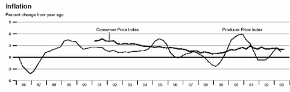
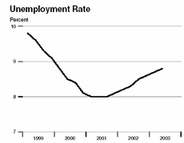
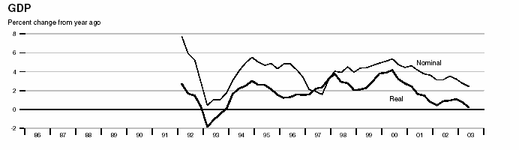
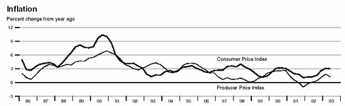
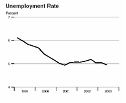
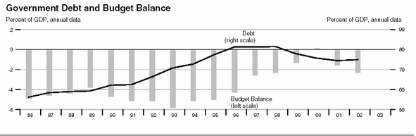

Управление суверенитетом в интересах граждан
Основные принципы, которых необходимо придерживаться при управлении отдельными суверенными правомочиями государства:
Содержать армию, адекватную возможным угрозам
Не отказываться от права на контроль за иммиграцией
Сосредоточиться на уголовном правосудии
Не препятствовать свободе движения через свою границу товаров, услуг, капитала и рабочей силы.
Не стремиться к международной унификации законов.
Не вступать в международные денежные союзы.
Не становиться орудием отдельных общин, НКО и коммерческих компаний.
1. Введение: проблема субъекта во внешней и внутренней политике
Теория международных отношений является одной из дисциплин, в которых степень согласия между исследователями стабильно находится на относительно низком уровне. Поэтому в отличие от точных наук и даже экономики в этой теории не сформировался "мэйнстрим", основное течение в науке. Эту роль выполняют четыре основные теоретические школы: реализм, марксизм, либерализм и постмодернизм. Каждая из них предлагает свое видение внешней политики в ее соотношении с внутренней.
Позиция реалистов. Внешняя и внутренняя политики относительно самостоятельны. Внешняя политика отражает (должна отражать) постоянный интерес - задачу выживания нации. Внутренняя же политика в значительной степени ориентируется на преходящую конъюнктуру.
Позиция марксистов. Внешняя и внутренняя политики тесно связаны и определяются экономическими отношениями в мировой экономической системе. В современном мире проблемы эксплуатации относятся не только к отношениям внутри государств, но и к отношениям между государствами.
Позиция либералов. Внешняя политика является продолжением внутренней. Целью внешней политики является реализация стремления к свободе, процветанию и безопасности.
Позиция постмодернистов. Внешняя политика является продолжением внутренней. Однако складывающиеся во внутренней политике интересы определяются особенностями мировой общественной системы, разделяемыми членами "глобального общества" ценностями.
В независимости от того, какую именно из четырех точек зрения принять, их практическое использование руководителями государства сегодня уже невозможно без учета следующего факта:
внешняя и внутренняя политика являются внешней и внутренней по отношению к государству, границы которого становятся все менее определенными.
Возможности государства все в большей степени определяются его успехом в конкуренции между различными, в том числе, и негосударственными юрисдикциями.
Понятие юрисдикция происходит от латинского jurisdictio - судопроизводство и имеет два связанных друг с другом значения
1) Юрисдикция - компетенция судебных органов по рассмотрению гражданских, уголовных и иных дел; круг дел, которые данный суд имеет право рассматривать и решать.
2) Юрисдикция - правовая сфера, на которую распространяются полномочия данного государственного органа.
Фактически, второе значения является расширением и конкретизацией значения первого. Судебные процедуры нуждаются как в механизмах установления права, так и в механизмах исполнения судебных решений.
В результате конкуренции юрисдикций государственный суверенитет все в меньшей степени является неделимым и безусловным: он более полон у успешных государств, менее полон - у других, отдельные полномочия передаются государствами на над- и не- государственный уровень, другие - на региональный.
Результатом размывания государственного суверенитета стало появление кроме классических национальных государств двух новых видов государств: провалившихся государств (failed states) и так называемых поствестфальских государств.
Провалившимися называют те государства, которые не в состоянии поддерживать внутренний мир на своей территории. Чаще всего это происходит в условиях большой фрагментирвоанности общества и попытки государства быть инструментом одной из противостоящих групп.
Поствестфальскими называют государства, которые активно ограничивают свой суверенитет межправительственными соглашениями. Такое государство обычно связано с: (а) глобализированной экономикой; (б) многоуровневым управлением и ослаблением идентичности, связанной с государством-нацией; (в) возросшими уровнями межгосударственного сотрудничества.
(http://www.kis.ru/~dbalu/staterole1.htm)
Все это означает, что отныне выживание государства в качестве особого, территориального, вида юрисдикции зависит от успешного применения науки и искусства управления суверенитетом.
- С одной стороны, управление суверенитетом является наукой, так как должно учитывать достижения целого ряда научных дисциплин: культурологии, менеджемента, политологии, социологии, экономики. Также имеют важное значение достижения дисциплин, которые не являются науками в привычном смысле слова: военного дела и этики.
- С другой стороны, необходимость сочетания выводов названных дисциплин делает управление суверенитетом искусством, так как предполагает и выбор между конкурирующими теориями в рамках каждой из дисциплин и приложение их к конкретным обстоятельствам времени и места.
- В рамках данного обзора предполагается рассмотреть, какие действия государства могут позволить ему оставаться конкурентоспособным в сравнении с новыми субъектами международных отношений: межправительственными организациями, неправительственными организациями, транснациональными корпорациями и даже приобретающими все большие полномочия внутригосударственными регионами.
- (1) Предупреждение правонарушения;
- (2) Выявление правонарушения;
- (3) Пресечение правонарушения;
- (4) Расследование правонарушения; и
- (5) Осуществление правосудия.
2. Управление суверенитетом: пролог
2.1. Государственный суверенитет как форма юрисдикции
Государственный суверенитет, как и национальные государства, не является единственно возможным способом организации власти. Напротив, эти связанные друг с другом концепции не существовали на протяжении большей части человеческой истории.
На протяжении более 4,5 тысяч лет от создания египетского царства до подписания Вестфальских соглашений основными формами власти являлись:
- Классические империи, которые не признавали территориальных ограничений власти. Причем сама власть принадлежала не империи как абстрактной сущности, а самому императору.
- Племенной вождизм, где личная власть правителя распространяется на членов определенной группы.
- Феодализм, где власть над людьми обусловлена определенным набором прав собственности феодала на территорию.
- Город-государство, в котором "государство" подразумевает входящих в него граждан.
Закрепленная вестфальскими соглашениями концепция государства стала качественно новой формой организации власти. В отличие от перечисленных выше форм власти государство не было тождественно правителю: ни единоличному вождю или императору, ни коллективному наподобие городского вече. Избавившись от названных тождеств государство стало юридическим лицом: оно не сводится ни к своим учредителям, ни к руководителям, ни к конкретному имуществу. Подобно другим юридическим лицам государство имеет права и обязанности, может самостоятельно действовать, чего не может делать любой договор: общественный и коммерческий.
Тем не менее, существуют и различия между государством и другими юридическими лицами.
Во-первых, на сегодняшний день государства определяют статус других юридических лиц, тогда как статус государства определяется в отношениях с другими государствами.
Во-вторых, существует ряд функций (суверенитет), которые государство оставляет только себе.
В-третьих, суверенитет распространяется только на определенную территорию, где он эксклюзивен и всеобъемлющ.
Государство в качестве юридического лица оказалось весьма конкурентоспособной формой организации власти. Это предопределило несколько обстоятельств. Прежде всего, несводимость государства к конкретным правителям означала большую, чем прежде, степень устойчивости. Кроме того, государство оказалось достаточно эффективным средством поддержания мира по сравнению с системой конкурирующих и конфликтующих глобальных, имперских по характеру юрисдикций.
2.2. Ограниченный характер суверенитета
Формирование системы национальных суверенных государств, тем не менее, не означало того, что в каждом конкретном случае за понятием государственного суверенитета стояло одно и то же содержание: суверенитет некоторых стран был более полным, чем у других, а в отдельных случаях оставался юридической фикцией. Эти факты становятся очевидными, если посмотреть на отдельные составляющие понятия суверенитета.
Современными исследователями выделяются следующие значения суверенитета (http://www.kis.ru/~dbalu/staterole1.htm).
1. Суверенитет взаимозависимости - способность государств контролировать движения через свои границы. Эта способность никогда не была абсолютной, но особенно ограниченной стали возможности государства в связи с развитием технологий.
Радио, телевидение, спутниковое телевидение, телефоны, факсимильная связь и Интернет с легкостью пересекают границы стран и это предполагает все меньшие затраты.
Так за 1930-1990 стоимость 3-минутного телефонного разговора из Нью-Йорка в Лондон упала с $244,65 до $3,32. (http://papers.nber.org/papers/w7858)
2. Внутренний суверенитет - внутренние полномочия государственных структур и способность эффективно влиять на поведение населения. Эта возможность государства в решающей степени зависит от лояльности граждан. Однако сегодня не очевидно, что именно государства олицетворяют высшую степень гражданской идентичности. Индивиды, как правило, имеют множество идентичностей, большинство из которых могут сосуществовать до тех пор, пока не возникнут проблемы, вынуждающие их выбирать, в чем состоит их главная идентичность.
Так, в 1999 году в США 73% населения рассматривало себя как "граждан мира" одновременно с признанием гражданства США. (http://www.vox-populi.org/digest/america_role2.html#4). Вопрос о том, как повели бы себя эти граждане в случае конфликта идентичностей пока что является открытым.
Лояльность - явление обмена и имеет тенденцию устремлять туда, где обеспечиваются материальные и психологические выгоды. Самая высокая лояльность обычно наблюдается по отношению к самому себе, семье и таким расширенным видам самоидентификации, как религия или этническая общность. Пока государство работает на них, обеспечивает их безопасность и благосостояние, оно также пользуется уважением, и ему служат - иногда вплоть до добровольная смерти на поле боя под флагом своей страны. В тех же случаях, когда правительству не удается эффективно решать эти задачи, оно погибает: либо относительно мирно, наподобие СССР, либо провоцирует гражданские конфликты, как в Югославии.
В неудачно организованных или терпящих неудачу государствах, подобных Албании, Руанде, Бурунди, Заиру, Сомали, Ливану, Сьерра Леоне и многим другим, более благополучным, но сталкивающимся с мятежами правительствами с большим трудом удается или даже совсем не удается поддерживать минимум общественного порядка.
Что касается России, то степень лояльности граждан находится на среднем уровне. Так, по данным опроса РОМИРа сражаться за страну готово только 70% населения. (http://www.romir.ru/socpolit/socio/02_2004/23.htm)
3. Вестфальский суверенитет - исключение внешних источников власти как de jure, так и de facto. Согласно этому принципу, в рамках собственных границ государство обладает монополией на принятие решений.
Ограниченность этого принципа иллюстрируется не только мировыми войнами прошлого столетия, но и локальными конфликтами вроде военных операций в Афганистане, Ираке, Сомали, а также фактическим контролем СССР над странами Восточной Европе при формальном наличии у них ряда других признаков суверенитета.
В то же время можно говорить о формировании "нового вестфальского клуба", состоящего из ядерных держав. Только про эти страны с уверенностью можно говорить, что они обладают полным вестфальским суверенитетом, если не учитывать возможность установления несилового контроля за страной.
4. Международный юридический суверенитет связан со взаимным признанием государств. Государства в международной системе, подобно гражданам страны во внутренней политике, свободны и равны.
Легко увидеть, что не каждое государство обладает в полной мере всеми видами суверенитета. Так, Тайвань способен контролировать как свои границы, так и население, однако не обладает международным юридическим суверенитетом, а вестфальский суверенитет ограничен фактическим протекторатом США. В слаборазвитых странах нередко складывается другая ситуация: международное признание и фактическое невмешательство в дела страны сопровождается неспособностью правительства эффективно поддерживать гражданский мир.
Процессы подрыва целостности государственного суверенитета идет сразу с нескольких сторон: от других государств, от внутригосударственных регионов, от общественных и коммерческих организаций. В этой ситуации имеет смысл обратить внимание на конкурентов.
2.3. Конкурирующие формы юрисдикций
Будучи одной из форм организации юрисдикции, суверенные национальные государства всегда сталкивались с конкуренцией со стороны других видов юрисдикций.
Наиболее серьезная опасность для государства сегодня исходит от тех юрисдикций, которые не признают территориальных ограничений своей власти и стремятся к глобальному правлению, не основанному на добровольных контрактах. Такие юрисдикции можно условно назвать империями. Наиболее известным примером такого института являются США, которые в последние годы в явной форме отказались от поддержки принципа национального суверенитета.
Основным отрицающим национальный суверенитет принципом внешней политике США является доктрина "предупредительного удара".
В первый раз президент США Дж. Буш в явной форме упомянул идею предупредительных ударов в выступлении в Вест Поинте 1 июня 2002 года: "Если мы будем ждать, чтобы угрозы полностью материализовались, нам придется ждать слишком долго... Мы должны начинать борьбу с неприятелем, нарушать его планы и смотреть в лицо худшим угрозам до того, как они возникнут... наша безопасность требует, чтобы все американцы были предусмотрительными и решительными, готовыми к предупредительным действиям, когда необходимо защищать нашу свободу и наши жизни.
В сентябре 2002 года концепция нашла отражение в Стратегии национальной безопасности: "Мы должны быть готовыми остановить государства-изгои и их клиентов-террористов до того, как они будут в состоянии угрожать и использовать оружие массового поражения против Соединенных Штатов, а также наших союзников и друзей... Чем больше угроза, тем больше риск бездеятельности - и тем более обязывающие доводы в пользу предупредительных действий для нашей защиты даже если остается неопределенность относительно места и времени враждебной атаки. Для того, чтобы предупредить или предотвратить такие враждебные действия Соединенные Штаты, если необходимо, действуют предупреждающим образом".
http://www.ndu.edu/inss/strforum/SF200/sf200.htm
Однако имперский характер носят и организации вроде Международного уголовного суда и Гринписа.
Генеральный секретарь ООН Кофи Аннан так формулирует свое видение деятельности Международного уголовного суда: "В перспективе международной уголовный суд должен обеспечить всеобщее правосудие. Видение такой перспективы дает простую и возвышенную надежду... Только тогда невинные жертвы далеких войн и конфликтов будут знать, что они тоже могут спокойно спать под защитой правосудия; что они тоже имеют права и что те, кто нарушают эти права, понесут наказания".
Не подлежит сомнению, что деятельность подобного глобального суда потребует и введения глобальной полиции.
Другим потенциальным конкурентом государства являются различные виды контрактных юрисдикций. Одно привлекательное, хотя и не сопоставимое пока по возможностям с государством, решение предлагают созданные девелоперскими компаниями муниципалитеты, в которых с самого начала устанавливаются условия использования покупаемой собственности, условия нахождения на территории. В муниципалитетах и решаются и вопросы безопасности поселения.
В подобного рода поселениях (apartment communities) арендаторы и приобретатели жилья добровольно принимают на себя дополнительные по сравнению с "общегосударственными" обязательства и ограничения. Они могут касаться возраста потенциального соседа, его уровня дохода, отсутствия у него домашних животных вообще и отдельных их видов и пород в частности и т.д.
Другой возможный конкурент - глобальные контрактные юрисдикции, прообразом которых является работа посольств национальных государств. Окруженные территорией другого государства, посольства устанавливают на своей земле юрисдикцию и законы своей метрополии.
Наиболее распространенной формой глобальных контрактных юрисдикций является франчайзинговая деятельность. Организация (франчайзер) заключает контракт (франшизу), с другими лицами (франчайзи). Данный контракт вменяет для осуществления франчайзи поднадзорной франчайзеру деятельности контролируемые требования собственной разработки франчайзера. Деятельность франчайзи подвергается проверкам стороны инспекции франчайзера. При выявленных нарушениях франчайзи обязан исправить все выявленные нарушения, а в случае грубых нарушений или отказа в исправлении подвергается наказанию - разрыву контракта (обычно такой контракт предусматривает в обмен на подчинение юрисдикции франчайзера передачу технологий, а также право использования торговых марок франчайзера, что существенно облегчает маркетинг).
(http://www.prompolit.ru/files/33448/selfreg_oct02.rtf)
Таблица 1. Национальные государства и их конкуренты.
|
Виды юрисдикций |
Локальные |
Глобальные |
|
Контрактные |
Муниципальные образования |
Глобальные контрактные юрисдикции (франчайзинговые юрисдикции) |
|
Не-контрактные |
Национальные государства |
Империи, отдельные НКО |
В ряде случаев государство проигрывает конкуренцию за лояльность граждан. Тогда принято говорить о "провалившихся" государствах. В некоторых случаях провал государства происходит вследствие его неспособности поддерживать приемлемое для его граждан благосостояние. Однако чаще всего речь идет о тотальной неспособности примирить конфликтующие интересы различных групп населения. Это может произойти как вследствие коррумпированности государства в пользу одной из групп, либо по причине высокой фрагментации общества, когда любое конкретное решение не может быть поддержано большинством населения.
2.4. Принципы управления суверенитетом
Каждая из конкурирующих с государством юрисдикций обладает определенными привлекательными чертами. Так, всемирная империя могла бы, хотя совершенно не обязательно действовала бы подобным образом, ликвидировать барьеры для торговли и инвестиций. Локальные и глобальные контрактные инвестиции предоставили бы более соответствующее потребностям граждан законодательство.
Способ выживания государства в подобной ситуации - сосредоточиться на основной задаче - удовлетворении интересов граждан с точки зрения их территориальной идентичности. Параллельное избавление государства от "непрофильных" функций позволит уменьшить конкурентные преимущества других форм юрисдикций.
Соответственно, принципы стратегии выживания государства в новой системе международных отношений можно разделить на три вида: укрепление ключевой функции государства (обеспечении безопасности проживающих на территории), уменьшение преимуществ имперских юрисдикций, уменьшение преимуществ контрактных юрисдикций.
Использование преимуществ территориальной формы юрисдикцииСодержать армию, адекватную возможным угрозам
Государство, которое не сможет защитить свое население от вторжения или возможности быть судимым США, Международным уголовным трибуналом или Гринписом неминуемо теряет поддержку. (Про организацию армии см. http://www.prompolit.ru/106725, а также http://www.prompolit.ru/141799)
Не отказываться от права на контроль за иммиграцией
Свободный рынок труда в стране не означает, что любой человек может стать ее гражданином. Как в частном клубе возможность его посещения любым лицом и участия в выработке правил серьезно снизила бы его привлекательность, так и в государстве неконтролируемая иммиграция снижет лояльность государству в пользу, например, националистов. (Подробнее см. http://www.sapov.ru/journal/2002-01/hoppe_immi.htm)
Сосредоточиться на уголовном правосудии
Безопасность нахождения на территории - то, от чего в решающей степени зависит "территориальная лояльность". Не каждая страна может гарантировать внутренний мир и безопасность. Та страна, которая сможет это сделать, получит серьезную поддержку населения.
Конкуренция с имперскими юрисдикциямиНе препятствовать свободе движения через свою границу товаров, услуг, капитала и рабочей силы.
Аргументы в пользу глобальной власти отдельных государств или международных институтов нередко сводятся к тому, что они обеспечивают эти блага в мировом масштабе. Между тем, империя не является единственным способом предоставить гражданам эти возможности: создание в своей стране свободной торговли под силу и отдельному государству.
Не стремиться к международной унификации законов.
Единство законов на большой территории является благом, но это благо частное. Ему противостоит другое благо - возможность выбора из различных режимов регулирования. Хорошие законы появляются в результате конкуренции и согласования интересов внутри страны, а не благодаря подписанию международных договоров.
На наличие международных картелей по выработке законов необходимо реагировать так же, как на ОПЕК: пользоваться их существованием и переманивать их "клиентов".
Не вступать в международные денежные союзы.
Суверенитет государства в монетарной сфере является "непрофильным" активом - он непосредственно не связан с проблемами безопасности территории. Гораздо более вероятно, что правительство будут критиковать за слабость валюты, чем благодарить за ее надежность. Государственное обеспечение экономики деньгами в конечном итоге должно быть отменено, как было отменено государственное обеспечение экономики обувью и продуктами.
В то же время, отмена этой функции означает ее отмену не в пользу надгосударственных валютных союзов, а в пользу своих граждан. Валютный союз может помешать уйти государству из производства денег и при этом редко создает более надежную валюту. Если бы размеры территории (и экономики) действительно определяли надежность валюты, то самой надежной валютой был бы доллар, а ненадежной - швейцарский франк. В реальности дела обстоят противоположным образом.
Конкуренция с контрактными юрисдикциямиНе становиться орудием отдельных общин, НКО и коммерческих компаний.
Государство как территориальная юрисдикция обладает поддержкой до тех пор, пока способствует безопасности и развитию граждан в их различных идентичностях. Попытка государства как территориального образования привлечь поддержку союзом с другими видами идентичности могут привести к успеху, однако будут означать подрыв государственной сущности государства.
На практике это означает отказ от политики "всеобщего благосостояния", означающего благосостояние одних за счет других; отказ от привилегий и "защиты" одних групп граждан от ненасильственных действий других (протекционизм, антимонопольная политика).
3. Управление отдельными суверенными полномочиями: проблемы конкуренции и сотрудничества в отношениях государств
3.1. Организация правосудия
Реалии становящегося все менее "вестфальским" мира таковы, что государства все в меньшей степени могут осуществлять правосудие без взаимодействия с другими государствами и негосударственными образованиями.
Во-первых, происходящее во многих странах дерегулирование приводит к передаче части государственных правомочий саморегулируемым организациям (СРО).
Во-вторых, государства все в большей степени вынуждены сотрудничать друг с другом, так как преступность все в большей степени действует в глобальном масштабе.
В-третьих, юрисдикционный империализм приводит к распространению идей "правосудия без границ".
3.1.1. Государства и контрактные юрисдикции
Растущая передача государственных полномочий контрактным юрисдикциям (дерегулирование) имеет, как минимум, четыре объективных основания.
Во-первых, дерегулирование является способом преодолеть недостатки бюрократического способа принятия решений, а также все более неэффективность дирижисткой модели отношений государства и экономических агентов.
Неограниченность государственного насилия сдерживает применение следующих принципов:
· Разделение властей, как способ уменьшить вред от власти;
· Принцип сдержек и противовесов (одна нечистая рука вполне может схватить другую нечистую руку - таким образом власти прислеживают друг за другом: через конкуренцию ветвей и органов власти).
· Принцип состязательного судопроизводства.
Все эти принципы вполне демократичны и рациональны (в условиях безальтернативности выбора юрисдикции). Платой за их реализацию является чрезвычайная медленность всей системы:
· правила вырабатываются крайне медленно, всегда неадекватны, плохого качества, подвержены влиянию лоббистов, их много и они запутаны.
· Надзор и контроль избыточны и неэффективны. Возможности для коррупции широки, так как проверяющие никак не заинтересованы в эффективности надзора и контроля.
· Суды крайне длительны (в частности, в силу плохого качества правил, а также по причине полного отсутствия доверия к суду).
· Вся система крайне затратна и дорога.
(http://www.prompolit.ru/files/50692/enforcement_0_1.rtf)
Во-вторых, дерегулирование является демонтажем показавшей свою неэффективность дирижистской системы управления.
Многочисленные исследования The Heritage Foundation показывают значимую положительную статистическую связь между степенью экономической свободы и важнейшими экономическими показателями.
Так, в 2000 году в наиболее свободных странах душевой доход составил $21 долларов, тогда как в наименее свободных - менее $3 тыс. (http://www.heritage.org/research/features/index/ ChapterPDFs/2001_Exec_Sum.PDF). Страны, которые в наибольшей степени либерализовали свои экономики в 1995-2002 гг достигли роста в среднем в 4.89%, тогда как в странах с наиболее слабыми улучшения (или даже ухудшениями) рост составил в среднем 2,53%. (http://www.heritage.org/research/features/index/ ChapterPDFs/chapter1.HTML)
Разумеется, эта связь может быть интерпретирована по-разному, но факт остается фактом: в стране с растущей экономикой свобода растет. То ли по причине, что экономическая свобода ускоряет рост. То ли по причине, что рост в конечном итоге приводит и к повышению экономической свободы.
В-третьих, серьезную роль сыграли изменения в области военного дела.
Распространение ядерного оружия сделало достаточно маловероятными боевые действия между наиболее развитыми странами. Сформировался своего рода "новый вестфальский клуб" применение силы в рамках которого практически невозможно.
В настоящий момент в этот "клуб" входят США, Россия, Великобритания, Франция, Китай, Пакистан и Индия.
Появление ядерного оружия стало одной из причин развития военной стратегии. На смену войнам второго поколения, "войнам на истощение", пришли войны третьего и четвертого поколений. Для военного дела это означало, что мобилизационная экономика больше не приносила успеха в войне. В противовес этому решающую роль начала играть мобильность и адаптивность военной инфраструктуры.
Отличительной чертой войны третьего поколения является активное использование асимметричности действий и ответов. Ведение войны основывается на нахождении недостатков в мышлении и диспозиции противника и использования их в целях дезорганизации его действий, принуждения его к максимально быстрому прекращению сопротивления, нейтрализации использования преимуществ противника. Действия такого типа предполагают комбинирование перемещений в пространства и времени, возможность быстрого развертывания и быстрого возвращения на исходные позиции.
Войны четвертого поколения характеризуются еще более ярко выраженным преобладанием асимметрии в военных конфликтах. В войнах этого новейшего типа она проявляется в преимущественном использовании нерегулярных войск (это не исключает их поддержки со стороны регулярной армии), альтернативном выборе целей (нередко ими становятся гражданские объекты) и осуществлении действий относительно малыми группами. По сути, это идентично терроризму - однако, это не просто терроризм (относительно единичное явление в индустриальную эпоху), а новый постиндустриальный способ ведения боевых действий. По сравнению с войнами третьего поколения акцент еще более смещается с собственно ведения конфликта на его предотвращение и ликвидацию возможных последствий. Кроме того, меняется и характер конфликтов: все меньшую важность имеют классические международные конфликты и охрана границ, которые на протяжении 20 века становились все более прозрачными, и все большую - сепаратистские движения внутри стран, которые чаще всего и приводят к появлению "международного измерения". (Подробнее см. http://www.prompolit.ru/106725, а также http://www.prompolit.ru/141799).
В-четвертых, снижение вероятности военных конфликтов между государствами означало, что в числе требований предъявляемых государством к гражданам уже не находились "героизм" и "готовность умереть за Родину". Смерть в результате ядерной войны не предполагает никакого героизма. Смерть от терроризма никак не связана с готовностью защищать страну. (http://www.mises.org/fullarticle.asp?control=527&id=65)
Соответственно, государство нуждается в несколько меньшей степени лояльности населения и ему уже не приходиться покупать ее в прежних количествах при помощи перераспределительных программ. Здесь легко увидеть и одно из объяснений масштабов перераспределения, которое не столько способствует росту общей поддержки населения (ведь в подобных случаях всегда есть не только "рецепиенты", но и "доноры"), а в поддержании достаточной для "героизма" лояльности у необходимого количества граждан.
Итак, передача некоторых полномочий контрактным юрисдикциям является оправданным способом распоряжения государственным суверенитетом. Это повышает благосостояние населения и приводит к созданию более соответствующей современным военным вызовам инфраструктуры.
3.1.2. Сотрудничество правоохранительных органов
Сотрудничество стран в области правосудия предполагает взаимодействие правоохранительных органов нескольких стран в одной или нескольких из следующих сфер:
Правонарушением является несоблюдение запретов, которые характерны для законодательства той или иной страны. Проблема однако в том, что эти запреты могут быть направлены как на защиту личных и имущественных прав граждан, так и на их ограничение.
Первые четыре вида возможного сотрудничества на практике сводятся к обмену информации между правоохранительными органами различных стран. Однако даже обмен информацией может представлять собой опасность для граждан, если речь идет о сотрудничестве в воплощении в жизнь законодательства, которое ограничивает права граждан.
Что касается последнего вида сотрудничества, то в конечном итоге речь идет о решении трех вопросов:
- о выдаче страной А граждан страны А в страну Б;
- о выдаче страной А граждан страны Б судам страны Б;
- о выдаче страной А граждан страны Б судам страны В.
Что касается первого вопроса, то стандартной (хотя и не всеобщей) международной практикой является отказ от выдачи граждан собственной страны иностранным государствам. Логика подобного подхода достаточно понятна - целью государства должна являться защита собственных граждан от неправомерных посягательств. Критерием же правомерности является право данной страны. Так, обвиняемый в совершении убийства на территории другого государства может быть осужден на основе действующих в стране норм. В случае же, если речь идет о "незаконной" покупке-продаже валюты, то гораздо больше причин говорить о не-правовом характере закона, чем о незаконности поведения гражданина.
Ответ на следующие два вопроса менее очевиден, правда и не столь важен с точки зрения защиты безопасности собственных граждан.
Так, если находящимся в стране А гражданином страны Б преступление было совершено в стране Б, то как правило страна А выдает его правосудию страны Б. Для такой выдачи, как правило, требуется соблюдение двух условий.
Первое - преступление, за совершение которого предъявлено требование о выдаче, должно признаваться преступлением и по законам страны, в которой находится преступник (принцип тождественности).
Второе - если по законам страны, требующей выдачи, за преступление предусмотрена смертная казнь, а в государстве, где находится лицо, совершившее это преступление, смертная казнь отменена, то условием выдачи обычно служит гарантия, предоставленная властями государства, требующего выдачи, о том, что смертная казнь к выданному преступнику применена не будет.
В случае же если находящимся в стране А гражданином страны Б преступление было совершено не на территории страны Б, а на территории другой страны, то запрос страны Б может и не быть удовлетворен, если нет предписывающего иное международного соглашения. Страна А может прийти к выводу, что дело должно рассматривать в той стране, где совершено преступление.
Наиболее разумным поведением государства является положительный ответ на запросы стран о выдаче их граждан в случае их соответствующих ответных действий.
Последний случай - выдача страной А граждан страны Б стране В также возможен, однако в этом случае речь должна идти о преступлении совершенном именно на территории страны В. В подобных случаях поведение государства должно быть гибким, учитывать возможную реакцию Б и В и возможные последствия этой реакции на способность государства охранять безопасность собственных граждан.
Итак, информационное сотрудничество между государствами допустимо в тех случаях, когда речь идет о расследовании действий, признаваемых правонарушениями и в стране. Выдача другим государствам собственных граждан не допустима, так как противоречит основным целям государства. Выдача граждан другим странам должна совершаться на принципах взаимности и с учетом влияния на отношения с этими странами.
3.1.3. "Правосудие без границ"
"Правосудие без границ" в конечном итоге сводится к "правосудию победителей". Ведь на сегодня нет другого способа заставить все суверенные государства подчиниться воле внешней инстанции, кроме завоевания или угрозы завоевания.
Наиболее известным случаем "правосудия победителей" был Нюрнбергский суд. Несмотря на первоначальные планы выдвинуть обвинения от имени "государств Организации Объединенных Наций" в конечном итоге обвинителями стали победившие в войне страны - СССР, США, Франция и Великобритания. (Jeremy Rabkin, Nurnberg Misremembered, SAID Review, summer-autumn 1999, pp 223-239).
Более современными примерами международных судов являются трибуналы по Югославии, Руанде, Сьерра Леоне, Камбодже и Восточному Тимору. Работа всех указанных трибуналов стала возможной благодаря смене в соответствующих странах или их частях правящего режима. Так, работа трибунала по Югославии стала возможной благодаря проигрышу боснийскими сербами военного конфликта, а также внутриполитическому поражению С. Милошевича. В Руанде возможность преследования за геноцид стала возможной только после разгрома армии хуту вооруженными силами притесняемого меньшинства - тутси. Трибунал по Камбодже также призван проводить разбирательства в отношении преступлений свергнутого армией Вьетнама режима "Красных кхмеров". Расследование преступлений против человечности и геноцида в Восточном Тиморе также стало возможно после признания Индонезией независимости страны.
Трибунал по Сьерра Леоне - пример несколько иного рода. В данном случае речь идет о признаваемой самим правительством страны невозможности обеспечить эффективное правосудие. Предметом разбирательств трибунала являются наиболее серьезные их преступлений, совершаемых в ходе военного противостояния правительства и повстанцев.
Разумеется, в указанных выше случаях можно указать на наличие оснований для вмешательства одних стран в дела других, однако при этом нельзя упускать из виду двух фактов.
Во-первых, эти действия имеют лишь весьма отдаленное отношение к реальному правосудию. Экстренное правосудие, какое и представляют из себя международные трибуналы, не может в полной мере придерживаться стандартных правил ведения процессов на принципах равенства и состязательности сторон. В частности, возможность привлечения свидетелей защиты обыкновенно весьма ограничена из-за риска привлечения их к ответственности.
Во-вторых, подобные процессы имеют весьма отдаленное отношение к защите прав собственности и прав личности. Отчасти потому, что международное вмешательство нередко основывается на других целях, чем защита прав индивидов. Отчасти потому, что такая защита носит разовый характер и слабо способствует "профилактике" нарушений прав собственности и личных прав. Отчасти потому, что примеры подобных процессов носят исключительно уголовный, а не гражданский характер и речь не идет о денежных или иных компенсациях жертвам.
В-третьих, у разных народов отличаются не только законы, но и представления о том, что считать правом и что считать справедливым. "Суд победителей" не является правосудием еще по этой причине.
Итак, всемирный суд возможен только в случае создания международной полиции, которая имела бы возможность держать под контролем населения любой страны. Появление такой международной полиции представляет опасность для граждан и задача государства как территориальной общности состоит в защите от подобных образований. Международный суд - удел побежденного народа, а не свободной страны.
3.2. Внешняя торговля
Создание единого мирового рынка является одним из благовидных предлогов установление власти одной юрисдикции над всем миром.
Однако есть и другой способ добиться того же самого - использование власти национальных государства для открытия экономики страны. Подобные действия позволили бы снизить привлекательность идеи мирового правительства среди ее сторонников. Что же касается противников, то их потери тем или иным образом должны быть компенсированы.
Возможность компенсаций гарантируется тем, что протекционизм наряду с перераспределительным эффектом между отдельными группами обладает и макроэкономическим эффектом, приводя к уменьшению совокупного благосостояния. Причем довольно значительному уменьшению.
Так, по словам А. Куряева "Сто семьдесят миллионов долларов - ... осторожная оценка капитала, который ежегодно бессмысленно уничтожается {по причине протекционизма} только в сахарной отрасли". (http://www.sapov.ru/alex_kuryayev/alexk_2003_12_01.htm). Конечно, можно считать, что эта сумма не столь значительна в масштабах России, но она сопоставима с той суммой ($150-300 млн), из-за которой Россия пошла на обострение отношений с нашим ключевым торговым партнером - Европейским Союзом - требуя компенсации за его расширение. (http://www.strana.ru/stories/01/12/04/2157/208376.html)
Можно указать на несколько базовых способов организации международных торговых отношений, которые мы перечислим в порядке убывания предпочтительности:
· многосторонняя свободная торговля
· односторонняя свободная торговля
· многосторонний протекционизм
· односторонний протекционизм
В данном обзоре мы рассмотрим только первые два способа, отставив последние два для отдельного обзора. Стоит только добавить, что государства чаще всего используют одновременно не один, а несколько способов регулирования торгового режима.
Например, США является членом ВТО (системе многостороннего протекционизма), является участником НАФТА (многостороннего соглашения о свободе торговли) и вводит в одностороннем порядке протекционистские пошлины на сталь. Страны Восточной Европы в одностороннем порядке снижают когда-то запретительные барьеры для иностранных товаров и одновременно участвуют в работе Всемирной торговой организации.
Клуб стран, которые уже успели существенно либерализовать свое внешнеторговое регулирование достаточно широк и, по мнению The Heritage Foundation, включает 13 стран, которые могли бы входить в Глобальную ассоциацию свободной торговли и 19 стран, которые не удовлетворяют только одному из четырех критериев членства в этой условной ассоциации: низким (менее 9%) тарифам ("Торговля"), свободе движения капитала и инвестиций ("Иностранные инвестиции"), низкому уровню регулирования ("Регулирование"), защите прав собственности ("Собственность).
Интересно отметить, что именно избыточное регулирование препятствует большинству развитых стран ЕС получить статус члена этой ассоциации.
Таблица 2
|
"Страны-члены" |
"Кандидаты" |
Политика мешающая "вступлению" |
|
Австралия |
Австрия |
Регулирование |
|
Великобритания |
Бахрейн |
Торговля |
|
Гонконг |
Бельгия |
Регулирование |
|
Дания |
Венгрия |
Регулирование |
|
Ирландия |
Германия |
Регулирование |
|
Исландия |
Израиль |
Регулирование |
|
Люксембург |
Испания |
Регулирование |
|
Новая Зеландия |
Италия |
Регулирование |
|
Сингапур |
Канада |
Иностранные инвестиции |
|
США |
Кипр |
Иностранные инвестиции |
|
Финляндия |
Нидерланды |
Регулирование |
|
Чили |
ОАЭ |
Иностранные инвестиции |
|
Эстония |
Польша |
Регулирование |
|
|
Португалия |
Регулирование |
|
|
Сальвадор |
Собственность |
|
|
Таиланд |
Регулирование |
|
|
Чехия |
Регулирование |
|
|
Швейцария |
Регулирование |
|
|
Швеция |
Регулирование |
(http://www.heritage.org/research/features/index/ ChapterPDFs/2002_Exec_Sum.PDF)
3.2.1. Многосторонняя свободная торговля
Многосторонняя свободная торговля предполагает подписание договоров о создании зон свободной торговли, предусматривающие неприменение в торговле договаривающихся стран пошлин, квот и иных ограничений.
Каждая страна может быть членом одновременно нескольких зон свободной торговли. Так, США подписал ряд как двусторонних (Чили, Сингапур, Иордания, Австралия), так и многосторонних соглашения о свободной торговле (НАФТА, АТЭС). Ведутся переговоры и с участниками Центрально-американской ЗСТ (CAFTA), Южноафриканским таможенным союзом (SACU), планируется создание Американской ЗСТ (FTTA) включающей большинство стран Южной и Северной Америк.
Нередко договора о свободной торговле дополняются другими соглашениями, которые регулируют уже не свободу торговли, а тарифную защиты против третьих странах (таможенные союзы) или ту или иную степень унификации экономической политики (общий рынок). Эти виды соглашений логически не связаны собственно с вопросом либерализации внешней торговли.
В отличие от договоров о создании зон свободной торговли соглашения о таможенных союзах ограничивают свободу государств в выборе отношений с третьими странами, предписывая поддерживать общий для всех уровень тарифной защиты. Таким образом, одновременное участие страны в двух таможенных союзах или таможенном союзе и зоне свободной торговли требует установление общего для двух таможенных союзов тарифа или вхождения всех входящих в зоне свободной торговли стран в таможенный союз целиком.
Судя по всему, подобную ситуацию порождает российское участие в двух интеграционных объединениях одновременно: "Общем европейском экономическом пространстве" (с Европейским Союзом) и "Едином экономическом пространстве" (с Белоруссией, Казахстаном и Украиной).
Так, с одной стороны Соглашение о партнерстве и сотрудничестве между Россией и ЕС устанавливает, что одной из целей партнерства является "создание необходимых условий для учреждения в будущем зоны свободной торговли между Россией и Сообществом, охватывающей в основном всю торговлю товарами между ними, а также условий для реализации свободы учреждения компаний, трансграничной торговли услугами и движения капитала". (http://www.eur.ru/ru/p_330.htm)
С другой стороны, Соглашение о формировании единого экономического пространства и Концепция формирования единого экономического пространства, которая является неотъемлемой частью Соглашения предусматривают унификацию таможенных тарифов и, формирования общего таможенного тарифа. (http://www.zakon.kz/our/news/news.asp?id=16059)
На практике это означает, что теперь создание зоны свободной торговли с ЕС потребовало бы участия в ней и партнеров по ЕЭП. При этом, у Белоруссии соглашение о партнерстве с ЕС отсутствует, соглашение Казахстана не предусматривает создание зоны свободной торговли, а соглашение с Украиной предусматривает возможной создания такой зоны, но не упоминает о возможности ее вхождения в общее европейское экономическое пространство.
Участие страны в нескольких зонах свободной торговли не означает создания общего таможенного пространства между всеми участвующими странами. В таких случаях таможенный контроль на границах участников зоны свободной торговли сохраняется для контроля за страной происхождения товара. Так, ввозимый с территории США на территорию Мексики товар будет облагаться таможенной пошлиной, если он происходит из страны, не входящей в НАФТА.
Страна происхождения товара - страна, в которой товары были полностью произведены или подвергнуты достаточной переработке. Под страной происхождения товара может пониматься группа стран, таможенные союзы стран, регион или часть страны, если имеется необходимость их выделения для целей определения происхождения товаров. В Российской Федерации порядок определения стран происхождения товара устанавливается Правительством РФ на основе положений закона РФ "О таможенном тарифе".
Организация многосторонней свободной торговли уменьшает привлекательность создания глобальных юрисдикций, так как те же результаты достигаются и без их помощи. Преимуществом многосторонней свободной торговли перед односторонней является то, что она позволяет жителям страны получать выгоду не только от возможности свободно покупать иностранные товары, но и без ограничений продавать свои товары за рубежом.
3.2.2. Односторонняя свободная торговля
Существует и другой способ увеличить привлекательность государства - проведение политики односторонней свободной торговли. Достоинством этого способа является то, что он доступен любой стране в независимости от доброй воли и готовности других стран к встречным шагам. Пойдя по этому пути страна может:
· Снизить или отменить таможенные пошлины;
· Снизить или отменить ограничения на приезд иностранцев и их участие в бизнесе;
· Признать зарубежные технические стандарты допустимыми для работы на внутреннем рынке.
Это позволит воспользоваться всеми преимуществами свободной торговли, хотя и не в той мере, в какой это могло бы быть при соответствующих действиях других стран.
Путь одностороннего открытия рынка в той или иной мере знаком любой стране, которая проводила рыночные реформы. Особенно массовыми односторонние действия стали после разрушения коммунистической системы, когда либерализация внешней торговли входила в достаточно широкие пакеты преобразований.
Кроме пост-коммунистических стран примеры односторонней либерализации внешней торговли предоставляют Чили, Мексика, Новая Зеландия, Австралия, Южная Корея, Гонконг.
Известный классический случай полномасштабного открытия рынка дает Великобритания XIX века.
Англия последовательно проводила два принципа - не давать никаких преимуществ английскому производству перед иностранным и добывать пошлинами значительный фискальный доход. Поэтому сохранены были пошлины лишь на такие товары, которые вообще не могут производиться в Англии, как чай, кофе, какао, перец, коринка, изюм и другие сушеные плоды, или же могут производиться, но в действительности не производятся, как сахар-песок, или производство которых было (до 1909 г.) запрещено, как табак (но и теперь оно почти отсутствует), - об охране внутреннего производства во всех этих случаях не может быть и речи. Или, наконец, они имеют компенсационный характер - соответствуют акцизу, уплачиваемому с тех же товаров, произведенных внутри страны, как пошлины на пиво, вино, спирт и спиртные напитки, игральные карты... По той же причине - фискальных целей - число статей британского тарифа все более сокращалось, оставались лишь те статьи, которые приносят значительный доход... При этом табак, чай, вино, спирт и изделия из него и сахар давали накануне войны 95,4% всех таможенных доходов...". (Кулишер И.М. Основные вопросы международной торговой политики. М.: Челябинск, 2002, с. 37-38).
Если в XIX веке признанным лидером свободной торговли была Великобритания, то в конце XX эта роль принадлежит Гонконгу. Ссылаясь именно на гонконгский опыт М. Тэтчер в своей последней книге предлагает вариант односторонней свободной торговли в качестве альтернативы ЕС для Великобритании.
"Такое решение на самом деле более логично и привлекательно, чем может показаться на первый взгляд. И практика, и экономическая теория показывают, что свободная торговля - самый лучший путь использования естественных преимуществ страны. Наглядный пример этого - крошечный Гонконг. Гонконг приобрел свое богатство, будучи беспошлинным портом практически с нулевыми таможенными тарифами. Из страны, довольствующейся скромным уровнем жизни 40 лет назад, он превратился в государство, ВВП которого на душу населения выше, чем в Великобритании. Тому, кто хочет найти хорошее применение своим способностям и ресурсам, на открытом международном рынке нечего бояться, кроме самого себя. (М. Тэтчер. Искусство управления государством. - М.: Альпина Паблишер, 2003. Стр. 434).
Как и в случае с любыми другими преобразованиями, либерализация внешней торговли может затрагивать разнонаправленные интересы большого количества групп. Успех реформы во многом зависит от учета этих интересов, что может повлиять на скорость реформ, их последовательность, а также выбор компенсационных механизмов для теряющих от реформы.
Можно указать на пять возможных механизмов компенсации.
Таблица 3
|
Механизм |
Основные черты и некоторые примеры |
|
1. Прямая компенсация |
Группам напрямую затронутым политикой реформ предоставляется компенсация путем прямых выплат денег или передачи ценных бумаг. Благодаря этому власти ожидают уменьшение противодействия этой группы реформе. Примеры компенсационных механизмов такого типа включают распределение пакетов акций приватизируемых фирм среди рабочих данной фирмы, программы помощи работникам, потерявших места в результате либерализации торговли. |
|
2. Косвенная компенсация |
Этот механизм предполагает компенсацию затронутым данной реформой группам через изменение других видов политики, которые повышают их доходы или уменьшают их издержки производства. В некоторых случаях такая косвенная компенсация является "автоматической", будучи порожденной нормальной работой рыночных сил. В других случаях, она является результатом особых мер. Одним из наиболее важных косвенных компенсационных механизмов является реальный валютный курс. Девальвация отчасти может компенсировать потери импортозамещающих отраслей, в то время как экспортеры получают дополнительную прибыль. Налоговые льготы затронутым дерегулированием секторам также составляют распространенную форму компенсации. |
|
3. Перекрестная компенсация |
Этот механизм предполагает прямую или косвенную передачу ресурсов группам, которые реформа напрямую не затрагивает, для того, чтобы получить их политическую поддержку. Примером этого является передача акций приватизируемых предприятий населению в целом во время рыночных реформ в России и Бразилии. |
|
4. Эксклюзивная компенсация |
Предполагает исключения влиятельных групп из тех, на кого распространяется воздействие реформ, или принятия мер, которые равнозначны такому исключению. Предоставление этим группам особых привилегий позволяет ожидать, что они не станут активными противниками реформы. Классическим примером использования этого механизма является особый режим для армии во время реформы чилийской пенсионной системы. |
|
5. Политическая компенсация |
Механизм политического "кнута и пряника". Может предполагать назначение влиятельных представителей определенных групп на высокие посты или, наоборот, ограничение влияния определенных групп. |
(http://papers.nber.org/papers/W6510)
Политическая необходимость компенсаций группам, теряющим от реформ, становится особенно очевидной, если учесть, что необходимость этого принимал во внимание и диктатор А. Пиночет, проводивший либерализацию внешней торговли относительно постепенно и вводивший компенсации для различных групп при помощи тех или иных мер из правительственного пакета реформ.
Так, в случае со снижением таможенных пошлин наиболее очевидными пострадавшими были импортозамещающие отрасли и профсоюзы. Однако по совокупности реформ первые смогли выиграть от девальвации песо, либерализации операций с капиталом, приватизации и смягчении трудового законодательства. Вторые же получили выигрыш от проведения пенсионной реформы.
Что же касается рабочих как таковых (вне связи с профсоюзами), то на протяжении всего правления А. Пиночета существовали программ занятости для работников "высвобождаемых" отраслей.
Учет интересов заинтересованных сторон не помешал провести полномасштабную либерализацию внешней торговли. На протяжении реформ все количественные ограничения были отменены, а средний таможенный тариф, который в среднем составлял более 100% был снижен до единого тарифа в 11% под который подпадало 99,5% продукции. (http://papers.nber.org/papers/W6510)
Принятие мер по односторонней либерализации не препятствует участию и в многосторонних переговорах. Так, с членством в ВТО совместима полная отмена таможенных тарифов, хотя правила ВТО этого и не требуют. Другое дело, что в определенной степени односторонне снятие таможенных барьеров уменьшает возможности для торга на многосторонних переговорах. Это единственный серьезный аргумент против использования мер по односторонней либерализации.
В то же время и этот аргумент справедлив только при некоторых оговорках.
Во-первых, экономика страны должна быть достаточно значимой в масштабах мировой торговли, чтобы снижение тарифов в ней могло заинтересовать политиков других стран в снижении тарифов у себя. Россия к таким странам не относится.
Во-вторых, ожидание совместных с другими странами действий не должно быть слишком долгим, либо ставка процента в стране (с учетом факторов риска и межвременных предпочтений) была низка. В противном случае немедленные выгоды от односторонней либерализации будут перевешивать долгосрочные выгоды от возможности повлиять на соответствующие действия торговых партнеров.
Кроме того, можно указать и на два обстоятельства, которые показывают, что односторонняя либерализация дает и некоторые преимущества в торговых переговорах.
Прежде всего, появляется "демонстрационный" эффект. Отсутствие экономических и политических потрясений после либерализации показывает партнерам практические (положительные) последствия такого шага.
Также не стоит упускать из виду факт международной конкуренции между потребителями продукции. Снижение пошлин одними странами может приводить к снижению пошлин другими странами - иначе ввоз продукции в страны с оставшимися высокими тарифами может стать нерентабельным.
Так, 26 декабря 2003 года Министерство торговли Китая сообщило об отмене запретительных пошлин на сталь. Они составляли 26% на различные виды сталепродукции и были ведены в мае 2002 г. Ранее предполагалось, что пошлины будут действовать вплоть до ноября 2005 г. Решение китайских властей последовало вслед за тем, как в начале декабря от протекционистских барьеров на импорт стали отказались США. "Китай последовал примеру Америки, - говорит аналитик ИК "Проспект" Николай Иванов. - Ведь если бы он сохранил пошлины, металлургам было бы выгодно продавать сталь в США, а быстро растущий китайский рынок мог бы столкнуться с дефицитом импортной стали".
(Стальная либерализация, Ведомости, 29.12.03, Б2)
Кроме того, частичное разделения вопроса о снижении торговых барьеров и подписания двух- и многосторонних соглашений позволяет строить отдельные коалиции в пользу обоих вопросов. После проведенной односторонней либерализации отдельные торговые соглашения сталкиваются с меньшим сопротивлением, чем если бы речь шла о взаимоувязанном снижении барьеров.
Итак, многие страны в разные периоды времени шли по пути односторонней либерализации внешней торговли. Несмотря на общий положительный эффект от таких мер всегда существуют группы, которые проигрывают от их осуществления. Сохранение лояльности этих групп и устойчивость преобразований зависит от нахождения эффективных компенсаций для проигравших.
3.3. Внутригосударственное экономическое регулирование.
Последние десятилетия автономия внутригосударственного экономического регулирования стала испытывать значительное давление с двух различных углов. С одной стороны, мы можем наблюдать тренд по направлению к децентрализации в сфере государственного обеспечения населения товарами и услугами. Такая децентрализация может принимать несколько форм: перераспределение власти от национального к региональному уровню, а также приватизация государственных предприятий или имитация на них корпоративного управления. С другой стороны, тренд на централизацию применяемых инструментов внутригосударственного экономического регулирования, но не от регионального уровня к национальному, а от национального к международному, надгосударственному уровню. Таким образом, постепенное усиление международного взаимодействия приводит к дальнейшему развитию надгосударственных образований, которые теперь уже не только могут регулировать данное взаимодействие, но и также непосредственно вмешиваться во внутригосударственное экономическое регулирование. Как следствие, проблема управления суверенитетом в данной области приобретает все большую остроту.
Взаимодействие с различными надгосударственными образованиями, существующими на данный момент, в области внутригосударственного регулирования экономики можно разделить на два основных вида:
1. незначительное уменьшение суверенитета, в результате принятия налагаемых надгосударственным образованием каких-либо обязательств, в сфере внутреннего экономического регулирования в обмен на получение определенных гарантий во взаимодействии с другими государствами;
2. сильное ослабление суверенитета в виде полного подчинения надгосударственному образованию в обмен на помощь в решении внутренних проблем и обеспечение внешних и внутренних условий "жизнедеятельности" государства, аналогичных условиям других государств-членов данного образования.
3.3.1. Правовой статус международных договоров в России
Стоит отметить, что подписание международных соглашений резко ограничивает возможности стран в дальнейшем проведении самостоятельной политики. Рассмотрим возникающую здесь правовую ситуацию на примере России, где международные договора имеют силу сходную с силой федерального конституционного закона.
Место международного законодательства в правовой системе Российской Федерации определяет ч. 4 ст. 15 Конституции РФ, согласно которой "общепризнанные принципы и нормы международного права и международные договоры Российской Федерации являются составной частью ее правовой системы. Если международным договором Российской Федерации установлены иные правила, чем предусмотренные законом, то применяются правила международного договора". Эта норма имеет несколько важных следствий.
Во-первых, проводится различие между "общепризнанными принципами и нормами международного права" и международными договорами.
Во-вторых, ратификация не ставится в качестве условия применимости норм международного договора.
В-третьих, нормы международного договора имеют приоритет перед противоречащими ему законами.
Перечисленные выше нормы распространяются и конкретизируются уже в рамках федерального законодательства. Основой правового регулирования международно-правовых отношений является федеральный закон "О международных договорах Российской Федерации" (далее - Закон).
В рамках российского права международные договора имеют высокий приоритет, сравнимый с нормами 2-9 глав Конституции и федеральными конституционными законами.
С одной стороны, согласно статье 15 Закона обязательной ратификации подлежат международные договора РФ, если их нормы отличаются от норм законодательства РФ. При этом Государственная Дума согласно ч. 2 ст. 4 Конституции РФ не может ратифицировать международные договора, если они противоречат Конституции РФ.
С другой стороны, после ратификации международного договора любые поправки к главам 2-9 Конституции РФ, а также вновь принимаемые федеральные конституционные законы не должны противоречить нормам международного договора и заложенной в нем трактовке Конституции.
Отдельной проблемой является юридическая сила нератифицированных международных договоров и их соотношение с внутренними правовыми актами. Отсутствие ратификации не является само по себе основанием не применять международный договор. В то же время возникает противоречие между ч. 4. ст. 15 Конституции и по сути подзаконным положением такого договора. Возникающая коллизия разрешается Законом, предусматривающим обязательную ратификацию противоречащих законодательству РФ договоров ( ст. 15). Согласно п. "г" ст. 106 Конституции РФ после ратификации такого договора в Государственной Думе ФС РФ, договор подлежит "обязательному рассмотрению Советом Федерации ФС РФ".
При этом, по ст. 24 Закона "международные договора вступают в силу для Российской Федерации в соответствии с настоящим Федеральным законом". Таким образом, "в случае возникновения спора о праве по поводу применения нератифицированного международного договора, положения которого оказались противоречащими закону, суд должен применять закон до тех пор, пока договор не ратифицирован".
Вопрос конституционности международного договора находится в компетенции Конституционного Суда РФ. Противоречащий Конституции РФ договор согласно ч. 6 ст. 125 Конституции "не подлежит введению в действие и применению". Однако, согласно п. "г" ч. 2 ст. 125 в полномочия Суда входит проверка на конституционность исключительно не вступивших в силу международных договоров РФ. Любые дальнейшие изменения в законодательстве РФ должны проводиться с учетом норм международного договора. Однако, если ГД ФС РФ принимает закон, противоречащий международному договору и Конституционный Суд подтвердит конституционность такого Закона, то "договор, если он не может быть истолкован иначе, подлежит денонсации".
Положение "общепринятых принципов и норм международного права" носит гораздо более неопределенный характер. С одной стороны, согласно ч. 4. Ст. 15 Конституции РФ они являются частью правовой ситемы РФ. С другой стороны, в отличие от международных договоров, в статье не указывается на приоритет данных "принципов и норм" над российским законодательством.
Поэтому "заинтересованные физические и юридические лица могут ссылаться непосредственно на нормы международного права при разрешении споров между собой и с государственными ораганами, учреждениями и организациями". При этом в силу отсутствия исчерпывающего перечня данных принципов и норм, решение о принадлежности данной нормы правовой системе РФ принимается судом в каждом конкретном случае. И если одни авторы склоняются к тому, что юридическая сила признанного судом "принципа или нормы должна быть идентичной силе ратифицированных международных договоров РФ", то другие утверждают, что из 15 статьи Конституции РФ следует, что такие принципы и нормы "не обладают приоритетом по отношению к противоречащим им внутренним актам".
Особенную важность для международных отношений России имеет статья 79 Конституции РФ, гласящая, что "Российская Федерация может участвовать в межгосударственных объединениях и передавать им часть своих полномочий в соответствии с международными договорами, если это не влечет ограничения прав и свобод человека и гражданина и не противоречит основам конституционного строя Российской Федерации".
Данная статья имеет два важнейших следствия.
Во-первых, "соответствующие международные обязательства могут быть приняты Россией только на основе международных договоров". При этом статья 15 Закона предусматривает обязательность ратификации таких договоров, если они "предусматривают передачу части полномочий Российской Федерации или устанавливают юридическую обязательность решений их органов для Российской Федерации.
Во-вторых, статья 79 Конституции РФ ставит условием членства отсутствие ограничений "достигнутого уровня защиты прав и свобод человека и гражданина".
3.3.2. Высокая степень сохранения суверенитета
Участие в большинстве международных организаций предполагает достаточно высокую степень сохранения национального суверенитета. Примерами этого являются такие надгосударственные образования как Всемирная Торговая Организация (ВТО) и Организация Экономического Сотрудничества и Развития (ОЭСР).
Взаимодействие с ВТО не предполагает значительный отказ от суверенитета в сфере внутригосударственного экономического регулирования, в связи с тем, что цель создания ВТО - это регулирование внешней торговли, поэтому влияние данной организации на внутригосударственное экономическое регулирование ограничено требованием приведения норм и положения внутри страны в соответствие условиям, необходимым для организации международных торговых операций.
Так, созданное в рамках ВТО Соглашение о государственных закупках требует, чтобы осуществление государственных закупок было открытым и прозрачным, а также, чтобы их проведение не предполагало защиту национальных производителей или дискриминацию иностранных.
(http://www.wto.org/english/thewto_e/whatis_e/tif_e/agrm10_e.htm)
Кроме этого, количество попыток при помощи ВТО непосредственно влиять на внутригосударственное регулирование достаточно мало ввиду того, что подписание и соблюдение соглашений является добровольным.
Так, созданные в 1997 году Международное соглашение о молочном производстве и Международное соглашение о говядине предполагали введение определенных санитарных норм. Однако они не получили распространения из-за того, что ведущие производители отказались их подписать.
(http://www.wto.org/english/thewto_e/whatis_e/tif_e/agrm10_e.htm)
Вступление в ВТО не очень сильно уменьшает суверенитет страны в области внутренней политики, но при этом и не является значимой экономической задачей.
В отличие от ВТО, большинство решений Организации Экономического Сотрудничества и Развития носят лишь рекомендательный характер и не являются обязательными к исполнению ввиду того, что ОЭСР представляет собой своеобразный форум для обсуждения и развития экономических и социальных политик. А те нормы, которым обязательно должны следовать государства-члены, допускают их неполное выполнение.
Так, статья 7 Кодекса либерализации текущих невидимых операции устанавливает, что если экономическое и финансовое положение государства-члена оправдывает такой курс, для него нет необходимости предпринимать весь объем мер либерализации, предусмотренных данным Кодексом, а также, если какие-либо меры либерализации, предпринимаемые или соблюдаемые в соответствии с положениями Кодекса приводят в результате к серьезному экономическому нарушению в соответствующем государстве-участнике, этот участник может отменить эти меры.
Тем не менее, вопросы, которые пытаются регулировать в рамках ОЭСР, включают в себя все возможные сферы деятельности государства, в том числе и внутригосударственное экономическое регулирование, но в аспекте взаимодействия с другими странами.
Так, в соответствии с Положением II к Положению А Кодекса, государства-участники не налагают ограничений в отношении гражданства лиц, которым разрешается действовать в качестве посредников в деятельности по оказанию банковских и финансовых услуг, действовать в любом секторе рынков, связанных с этой деятельностью, или становиться членами учреждений, таких как профессиональные ассоциации, биржи ценных бумаг или другие биржи, или рынки, саморегулируемые учреждения по торговле ценными бумагами, или другие рыночные посредники.
Таким образом, уменьшение суверенитета в рамках взаимодействия в данной организации предполагает взятие на себя обязательства не использовать дискриминационные методы в своей политики по отношению к гражданам иностранных государств, что, в конечном итоге, выгодно всем участвующими в ОЭСР сторонам. Тем не менее, вступление в ОЭСР, как и в случае с ВТО, не является значимым именно для внутригосударственного экономического регулирования.
3.3.3. Высокая степень ограничения суверенитета: случай ЕС
Наиболее радикальным примером ограничения суверенитета стран во внутренней экономической политике является Европейский Союз. Членство государства в ЕС среди прочего предполагает принятие обширного законодательства, разделенного на 31 главу.
Модель формирования ЕС имеет для России двойное значение. Во-первых, в силу ведущейся с 2001 года работы по созданию "общего европейского экономического пространства" между Россией и ЕС, которая предполагает согласно договоренностям и сближение законодательства.
Во-вторых, в контексте создания Единого экономического пространства между Россией, Белоруссией, Казахстаном и Украиной. Соответствующие соглашения по набору мер и предлагаемым этапам довольно сильно напоминают создание ЕС. Поэтому неслучайно, что вице-премьер РФ Виктор Христенко уже сравнил ялтинское соглашение с Римским договором 1957 г., с которого началась история вначале Общего рынка, а затем Евросоюза. (http://www.korrespondent.net/main/79440/)
Можно привести несколько характерных сюжетов связанных с принятием страной законодательства ЕС.
Законодательство о компаниях.
Данный раздел права ЕС предполагает гармонизацию законодательства с международными стандартами, усиление борьбы с нарушением права интеллектуальной собственности, создание системы пограничного контроля за соблюдением прав интеллектуальной собственности.
Особое внимание здесь стоит обратить на вопрос прав интеллектуальной собственности. Разница в законодательствах между странами, касающихся интеллектуальной собственности, приводит к перераспределению средств между ними (о чем более подробно см. "Международная политика в области исключительных прав"). Причем, стране с более высоким технологическим уровнем выгодно усиление норм, регулирующих защиту интеллектуальной собственности в других странах, поскольку это приводит к перетоку их денежных средств и активов в экономику данной страны. При этом развитость ее национального законодательства роли не играет.
Так, наиболее активные пропагандисты расширения исключительных прав на международной арене вовсе не обязательно имеют значительное количество норм об интеллектуальной собственности у себя. Законодательство США, даже после принятия DMCA, все еще остается много более либеральным, чем законодательства Украины или Латвии, принятые под прямым давлением американских посольств.
Таким образом, усиление законодательства о соблюдении прав интеллектуальной собственности может привести к негативным экономическим результатам.
Конкурентная политика и государственная помощь.
Унификация законодательства о конкурентной политике предполагает обязательное соответствие национальных законов стран директивам ЕС, регулирующим вопросы заключения соглашений, могучих ограничить доступ на рынок или направленных на обеспечение доминирующих положения, проблемы слияний, а также деятельность государственных монополий и государственных предприятий, обладающих специальными правами.
В целом, последствия применения антимонопольного законодательства являются негативными (о чем более подробно см. http://www.prompolit.ru/126483). Тем не менее, будет ли эффект от координации политики в данной области положительным или отрицательным зависит от первоначальной ситуации, которая была в стране перед вступлением в ЕС. Возможно как улучшение, так ухудшение существующих условий.
Сельское хозяйство.
Сельскохозяйственное законодательство ЕС затрагивает вопросы ветеринарии и санитарии, регулирует широкий спектр деятельности в области животноводства и растениеводства, а также обработку их продуктов с целью защиты потребителей, здоровья людей, животных и растений. Также норма данного законодательства устанавливают определенные стандарты качества и маркировки.
Последствия от потери суверенитета в области сельского хозяйства можно проиллюстрировать следующим образом:
Качество продуктов сельского хозяйства в странах-лидерах ЕС Германии и Франции является самым высоким, именно поэтому единое законодательство ЕС ориентируется на нормы и стандарты, установленные в данных странах. Однако, это одновременно и самые дорогие продукты в Европе. Очевидно, что на свободном рынке покупатель не обязательно выбирает самые качественные товары, достаточно часто дорогому продукту предпочитается более дешевый, хотя и менее качественный. Но в случае принятия единых стандартов высокого качества в процессе политической интеграции, покупатель теряет возможность выбора между ценой и качеством, так как будут производиться только дорогие продукты. Соответственно, политическая координация приводит к вытеснению с сельскохозяйственного рынка более дешевых товаров более дорогими, что, естественно, выгодно немецким и французским производителям и негативно сказывается на их конкурентах из других стран.
Окружающая среда.
Также как и в случае сельского хозяйства, унификация вступающей в ЕС страной своего природоохранного законодательства может привести к неблагоприятным экономическим последствиям. Данная часть европейского права состоит из более чем 200 актов и охватывает широкий спектр вопросов, включая: товарно-ориентированные природоохранные стандарты, регулирование загрязнения земли, воды и воздуха, охраны природы, следовательно, утверждение этих норм в качестве национальных приведет к значительному зарегулированию природоохранной сферы. Очевидно, что повышение уровня природоохранных требований означает существенное увеличение издержек в некоторых отраслях промышленности, а также может их вынудить к перемещению из данной страны в страны с более низкими стандартами, отрицательный экономический эффект от чего может в несколько раз перекрыть полученный выигрыш.
Защита потребителей и их здоровья.
Вступление в ЕС предполагает унификацию законодательных норм, касающихся качества и безопасности продуктов, вводящей в заблуждение рекламы, потребительского кредита, "несправедливых пунктов" в потребительских контрактах, обозначения цен и прямых продаж.
Последствия, также как и в случае конкурентной политики, зависят от изначальной ситуации в стране. Тем не менее, уменьшение суверенитета в данной области гарантирует использование государством наиболее высоких из существующих на данный момент стандартов, что, естественно, сказывается положительно на здоровье граждан, но при этом, приводит к значительному удорожанию продукции, для которой эти стандарты разработаны.
Рыболовство.
Данный раздел законодательства ЕС не содержит мер, которые в случае вступления должны быть обязательно перенесены в национальное законодательство. Тем не менее, ЕС стремиться, чтобы страны-кандидаты добровольно принимали нормы этого раздела до вступления, что позволяет подготовить операторов рынка и административные органы к участию в Общей политике ЕС в отношении рыболовства. Последняя предполагает типичное централизованное планирование, что означает полное лишение суверенитета в данной области и отсутствия возможности регулирования/ дерегулирования в интересах своих граждан.
Так, например, вступление Польши в ЕС вызывает проблему воссоздания законодательства, так как сектор рыболовства в данной стране был дерегулирован еще в 1989 году.
Социальная политика и занятость.
Гармонизация законодательства в данной сфере затрагивает следующие основные вопросы:
· создание равных возможностей для мужчин и женщин,
· координация систем социального обеспечения,
· проблемы безопасности и здоровья на рабочем месте,
· трудовое законодательство,
· регулирование табачного рынка.
С экономической точки зрения, последствия от унификации законов в данной области таковы:
Немецкие работники являются самыми квалифицированными и, следовательно, самыми высокооплачиваемыми в Европе. Но квалификация работника - не единственный фактор, который играет роль при приеме на работу; не менее важны его требования к оплате труда. Именно поэтому многие предприниматели предпочитают нанимать менее квалифицированных работников за более низкую зарплату. Как следствие, производства, требующие значительных трудозатрат, постепенно перемещаются в страны с более дешевой рабочей силой. Однако, унификации трудового законодательства (единые гарантии защиты от увольнения, общая продолжительность рабочего дня и недели, единое пособие по безработице) приводит к исчезновению стимула для инвестиции в те из данных страны, которые координируют с Германией свою политику, так как стоимость рабочей силы в них сблизиться со стоимостью рабочей силы в Германии. В результате, наемные работники и Германии, и этих стран будут в проигрыше: они не смогут устроиться на работу оттого, что их труд будет стоить слишком дорого.
Транспортная политика.
Вступление ЕС в данной сфере предполагает двустороннее снятие барьеров для разных видов транспорта, существующих в стране, а также установление единых правил деятельности на рынке, касающиеся квалификации, безопасности, социального обеспечения и обязательств перед государством.
Нормы ЕС, регулирующие автомобильный транспорт, охватывают экологические, фискальные, социальные, природоохранные вопросы, а также проблемы безопасности на транспорте. Требованиями законодательства в области железнодорожного транспорта являются: независимость железных дорог от государства, отделение управления инфраструктурой от перевозок, допуск железнодорожных компаний к инфраструктуре для оказания международных услуг.
Координация в области водного транспорта и авиации затрагивает обеспечение взаимного допуска на рынок стран-членов, а также вопросы обеспечения безопасности транспорта для людей и окружающей среды.
Таким образом, законодательство ЕС, обеспечивая свободу взаимного допуска на рынки транспортных услуг стран-членов, способствует созданию условий конкуренции в данной отрасли на международном уровне, что в значительной мере усиливает ее положительные эффекты. Также, ввиду того, что за железнодорожным сообщением в большинстве стран закреплен статус естественных монополий, ее незначительная либерализация благодаря принятию вступающей страной выше перечисленных требований ЕС является благоприятной для развития данного вида транспорта.
Тем не менее, особое внимание необходимо уделить вопросу безопасности. Законодательство ЕС предполагает прямое регулирование обеспечения безопасности на транспорте, то есть, указание требований, которые должны соблюдаться в транспортном сообщении, однако, данный способ регулирования содержит определенные недостатки. Во-первых, такое регулирование ведет к уменьшению количества возможных способов обеспечения безопасности, а также создает запрет на некоторые из возможных стратегий управления рисками и внешними эффектами. Причем, если на определенном техническом уровне такой запрет все-таки целесообразен, технический прогресс может за несколько лет изменить соотношение стоимостей и эффективностей принимаемых мер. Во-вторых, прямое регулирование приводит к потере ценовых сигналов эффективности применяемых стандартов: в связи с тем, что предписано применения одной стратегии обеспечения безопасности, а за применение альтернативных стратегий предусмотрено наказание, то естественно рыночная цена выбора будет отсутствовать. В-третьих, что наиболее важно ввиду уменьшения суверенитета вступающего государства, прямые технические нормы, число которых ввиду значительных территориальных и экономических различий будет существенным, необходимо пересматривать непрерывно, однако, парламентская процедура к такому пересмотру не приспособлена, а регулирование силами различных ведомств неизбежно приведет к коррупции и попыткам использовать проблему безопасности для решения других целей и задач. И, в-четвертых, как частичное следствие из предыдущего, все схемы прямого регулирования требуют значительных издержек на принятие и правоприменение.
Таким образом, унификация транспортной политики усиливает уже существующие проблемы обеспечения безопасности.
Региональная политика и координация структурных мер.
Последствия от членства в надгосударственном образовании в данной области зависит от первоначального экономического положения вступающей страны, так как этот раздел законодательства ЕС представляет собой набор технических мер, направленных на региональное выравнивание и финансирование региональных программ. То есть, если экономическая ситуация в стране выше, чем в среднем по странам, с которыми осуществлено сближение, то данная страна вероятнее всего станет донором, что естественно не является положительным результатом. В обратном случае наоборот последствия будут благоприятны. Именно поэтому страны Восточной Европы, будучи менее развитыми, так стремятся в ЕС, так как это гарантирует получение дополнительных субсидий и кредитов.
Телекоммуникация и информационные технологии.
Законодательство ЕС в данной области ориентирована на либерализацию рынка телекоммуникаций, поэтому отказ от суверенитета в данном случае означает:
· либерализацию передачи данных, телефонных переговоров, спутниковой и мобильной связи,
· ликвидацию эксклюзивных прав для отдельных компаний и введение процедур лицензирования,
· обеспечение доступа провайдеров выше перечисленных услуг к государственной инфраструктуре,
· создание законодательства по лицензированию, взаимодействию сетей и обязательств по набору услуг, например, предоставление "универсальной услуги",
· формирование единого рынка почтовых услуг.
Результаты унификации законов в целом являются благоприятными для экономики вступающей страны. Но при этом, очевидно, что подобные преобразования возможны и без потери суверенитета, путем принятия в одностороннем порядке подобные нормы в собственном законодательстве.
В данной области особое внимание необходимо обратить внимание на вопрос предоставления универсальной услуги. Во-первых, универсальная услуга по своей сути является одной из форм социальной политики, а следовательно, для нее, как и для всей социальной политики, характерны две основные проблемы: увеличение налогового бремени и создание препятствий для конкуренции. Во-вторых, набор телекоммуникационных услуг, которые могут входить в состав универсальной услуги, не является фиксированным и отличается от страны к стране, и фактически зависит от уровня экономического развития.
Так, директива 2002/22/EC законодательства ЕС обязывает предоставлять в качестве универсальной услуги фиксированную телефонную связь при наличии обоснованного требования со стороны граждан. А федеральной закон РФ "о связи" устанавливает, что время, в течение которого пользователь услугами связи достигает таксофона без использования транспортного средства, не должно превышать один час.
Таким образом, унификация политики, касающейся универсальной услуги, для страны может означать значительное, экономически необоснованное увеличение налогового бремени.
Итак, суммируя все выше сказанное, можно сделать следующие выводам:
1. экономический эффект от сильного ослабления суверенитета ради вступления в надгосударственное образование, подобное ЕС, больше для более развитых стран, так как унификация законов, в конечном итоге, предполагает сближение законодательств менее развитых стран к нормам их законов. Таким образом, менее развитые страны вынуждены действовать по "правилам игры", которые изначально создавались исходя не из их интересов,
2. однако, более развитые страны становятся финансовыми донорами для менее развитых, что для управляющих органов менее развитых стран выступает основным мотивом для сближения,
3. также, у менее развитых стран создается впечатление равенства с более развитыми странами, но за это приходится нести значительные экономические потери.
Стоит заметить, что в случае финансовой устойчивости государства, возможны удачные попытки в конкуренции с надгосударственными образованиям, подобными ЕС. Доказательством этому выступает Швейцария, которая, хотя и не вступила в ЕС, адаптировала те нормы ЕС к собственному законодательству, которые обладают позитивным влиянием на ее экономику, а также сохранила свой суверенитет, что гарантирует незыблемость закона о банковской тайне, а это позволяет Швейцарии привлекать значительные иностранные капиталы.
3.4. Денежная политика
С момента создания института центральных банков денежная политика являлась одной из основных частей суверенитета государств. Но, в течение последних десятилетий, понятие суверенитет государства в этой области перестал быть незыблемым.
Так, одиннадцать стран Европы утвердили единую валюту, проведение "долларизации" активно рассматривается многими странами Латинской Америки и уже осуществлено в Эквадоре, возможность создания единого валютного пространства обсуждается в Центральной Америке. Страны Восточной Европы также предполагают ввести в обращение Евро. В 2010 году запланировано ведение единой валюты на территории стран Персидского залива.
Таким образом, тенденция на усиление роли в международном экономическом взаимодействии надгосударственного единого валютного механизма с каждым годом усиливается. Однако, с точки зрения управления суверенитета государства, использование единой валюты означает частичный, а в большинстве случаев, фактически полный отказ от суверенитета в области денежной политики. "Валютный союз" является системой, целиком основанной на фиксированном курсе. Вступая в "валютный союз", страны связывают свои валюты через механизм фиксированного курса так, что валюта одной страны может быть в любой момент времени и в любом объеме конвертирована в валюту другой страны. Крайний, но при этом наиболее распространенный вид "валютного союза" - страны производят по заранее определенному курсу полную конвертацию своих национальных валют в единую валюту и далее используют только ее, что и приводит к созданию единого валютного пространства. Причем, управление денежной политикой в рамках данного пространства находится в сфере деятельности уже не самих государств, а специального надгосударственного монетарного образования, подчинение которому является обязательным. Именно поэтому, членство в "валютном союзе" приводит к потере суверенитета в сфере денежной политики.
Естественно, возникает вопрос: что мотивирует государства выбирать такой способ управления своим суверенитетом в данной области? Ответ на этот вопрос можно дать, обратившись к примеру самого большего (как территориально, так и по количеству стран-членов) из существующих на данный момент единых валютных пространств - к примеру Экономического и Валютного Союза (Economic and Monetary Union), являющегося основой ЕС.
Официальные документы Европейского Валютного Союза определяют понятие "валютного союза" следующим образом:
Валютный союз - это зона, где монетарная политика и обменный курс валют стран, входящих в состав союза, управляются таким образом, который позволяет достигать общих экономических целей.
(http://www.dip-badajoz.es/eurolocal/entxt/emu.htm)
За проведение монетарной политики в зоне Евро отвечает Европейский Центральный Банк (European Central Bank), который является общим монетарным органом для всех членов союза. Центральные банки стран-членов могут только участвовать лишь в непосредственном печатании и распространении Евро.
Считается, что отказ от суверенитета в области денежной политики в случае создания "валютного союза" компенсируется возникновением следующих преимуществ для каждой страны-члена ЭВС:
· отсутствие неопределенности относительно уровня курсов обмена валют стран, так как они фиксированы;
· уменьшение транзакционных издержек, возникающих вследствие разнообразия уровней обмена курса, как: затраты на прогноз курсовой ставки, затраты на конвертацию, затраты, необходимые на поддержание и управление резервами для внутрирегиональной торговли и т.д.;
· увеличение ценовой прозрачности, как следствие, усиление конкуренции производителей товаров на международном уровне
· обеспечение и усиление ценовой стабильности, что является главной целью создания "валютного союза";
· в случае использования единой валюты, она может выступать как международная резервная валюта;
· усиление дисциплины монетарной политики и увеличение к ней доверия населения, особенно в подверженных сильной инфляции странах;
· удержание инфляции под контролем, что увеличивает экономическую эффективность.
(http://www.dip-badajoz.es/eurolocal/entxt/emu.htm)
Таким образом, ЭВС приносит выгоду компаниям, способным контролировать свои производственные затраты, государственным управляющим органам, так как уменьшается значение проблемы дефицита бюджета и его контроля, и потребителям, которые, в виду усиления конкуренции, выиграют от увеличения числа товаров и услуг, продаваемых по более низким ценам. Поэтому, в целом, отказ от суверенитета в денежной политики в пользу "валютного союза" должно быть благом для интересов граждан, что будет значительно увеличивать их лояльность по отношению к своим государствам, а следовательно, в конечном итоге, будет усиливаться внутренний суверенитет.
Тем не менее, потеря суверенитета вследствие вступления в ЭВС имеет также определенные недостатки, а именно:
· невозможность проведения монетарной политики на национальном уровне в индивидуальном порядке, что не позволят странам-членам вносить изменения в курсовые ставки для борьбы с временным экономическим кризисом;
· необходимость значительно ограничить использование экспансивной фискальной политики на национальном уровне;
· есть вероятность возникновения проблемы безработицы, решение которой значительно будет усложнено в виду потери суверенитета в применении инструментов монетарной политики.
· унификация процентных ставок при том, что далеко не всегда в странах совпадает естественная ставка процента
Стоит сразу заметить, что первые два из перечисленных недостатков являются примерами вмешательства государственных органов в функционирование экономики, которые могут привести к ее значительному изменению. Таким образом, перечисленные недостатки вступления в "валютный союз" - отрицательный фактор именно для управляющих органов, так как ограничение применения данных инструментов экономического регулирования означает уменьшение возможности манипулирования различными экономическими показателями, а следовательно, создания искажений в экономике в личных целях. То есть, в общем случае два первых недостатка скорее можно расценивать как дополнительные преимущества для обычных граждан стран-членов "союза".
Тем не менее, опыт ЭВС показывает, что выше приведенных список преимуществ и недостатков, к появлению которых должно вести его создание, нуждается в определенной корректировке.
Во-первых, практика показала, что ценовая стабильность не является преимуществом, возникающим вследствие ведения "валютного союза".
Так, в Германии, после введения в обращение наличного Евро, между июнем 2001 года и февралем 2002 значительно возросли цены на 10,000 различных продуктов.
Статистическое исследование французской ассоциации потребителей UFC показало, что за первые полгода наличного обращения Евро стоимость недельной потребительской корзины повысилась на 10%. Исследование также показало, что за 2001 и начало 2002 года цены на мыло, шампунь и на некоторые другие виды косметической продукции увеличились более чем на 40%.
В Италии, согласно докладу потребительской ассоциации Altroconsumo, с момента ведения Евро цены значительно увеличились в 77% магазинов, а стоимость годичной потребительской корзины возросла на 770 евро.
После ведения в обращения единой валюты в Греции, цены на овощи и фрукты возросли приблизительно на 95%.
(http://www.no-euro.com/factsfigures/pdf/notworking.pdf)
В среднем по Еврозоне наблюдалась следующая ситуация с уровнем инфляции в течение последнего десятилетия:

(http://research.stlouisfed.org/publications/iet/20031101/iet.pdf)
Как уже упоминалось выше, считается, что при создании "валютного союза" есть вероятность возникновения проблемы безработицы, что является его незначительным недостатком. Однако опыт стран-членов ЭВС показывает, что вследствие ведения "валютного союза" проблема безработицы не только возникает, но и может приобрести достаточно острую форму.
Так, с конца 90-х годов до сегодняшнего момента на территории ЭВС можно наблюдать следующую ситуацию с уровнем безработицы:

(http://research.stlouisfed.org/publications/iet/euro/page1.pdf)
Таким образом, практика не подтверждает, что создание "валютного союза" ведет к ценовой стабилизации и ценовой конвергенции, а следовательно, они не могут выступать в качестве его преимуществ. Также, с введением "валютного союза" проблема безработицы может не только появиться, но и получить действительно тяжелый характер. А так как, ценовая стабилизация, ценовая конвергенция и уровень безработицы являются важными факторами, влияющими на экономический рост, то в целом предположение о значительном положительном влиянии "валютного союза" на выпуск стран-членов может быть не оправданно.
Так, с момента ведения единой валюты в 2000 году у стран, составляющих Еврозону, наблюдается тенденция к замедлению экономического роста.

(http://research.stlouisfed.org/publications/iet/20031101/iet.pdf)
Стоит заметить, что сложившаяся экономическая ситуация в странах-членах ЭВС может быть вызвана рецессий экономики США, так как они находятся в значительном экономическом взаимодействии друг с другом. Данное предположение можно считать верным, но только частично, потому что экономический спад Штатов не привел к подобной ситуациях в других странах, которые в не меньшей степени взаимодействуют с США.
Так, Великобритания, хотя и является членом ЕС, не входит в состав Еврозоны. При этом, Великобритания также в значительной степени взаимодействует с США, однако, ее экономические показатели отличны от наблюдаемых в Еврозоне.
Во-первых, в отличие от стран Ерозоны, в Великобритании не наблюдалось резких ценовых скачков.

(http://research.stlouisfed.org/publications/iet/20031101/iet.pdf)
Во-вторых, уровень безработицы понижается.

(http://research.stlouisfed.org/publications/iet/20031101/iet.pdf)
В третьих, в Великобритании хотя и наблюдается экономический спад, но он минимален в сравнении с показателями стран-членов EMU.
(http://research.stlouisfed.org/publications/iet/20031101/iet.pdf)
Таким образом, очевидно, что основной причиной отрицательных показателей развития стран-членов ЭВС спад экономики США не является.
Естественно, отсутствие данных преимуществ у "валютного союза" при его практической реализации не является случайным, существует несколько причин, вследствие которых их возникновение становиться маловероятным.
Отказ государства от суверенитета в денежной политики в пользу надгосударственного валютного объединения может быть вызвано (на что обычно стараются не обращать внимание ввиду того, что данная причина связана с интересами граждан лишь косвенно) желанием властей стран, вступающих в союз, избежать проблему погашения государственного долга, размер которого начинает достигать критических значений.
Так, в случае с ЭВС, в течение последнего десятилетия у стран-членов наблюдается следующая ситуация с отношением величины госдолга к размеру ВНП:

(http://research.stlouisfed.org/publications/iet/20031101/iet.pdf)
Причем, данная статистика не учитывает, например, пенсионных обязательств государств. В частности, по различным оценкам, общая задолженность всех государственных органов Германии перед вступлением в "валютный союз" оценивалась в 300 - 400% ВВП.
(http://www.sapov.ru/journal/2002-01/huelsmann.htm)
Известно, что государство благодаря дополнительной эмиссии получает выигрыш - сеньораж, который заключается в возможности приобретать на свеженапечатанные деньги товары и услуги по ценам, на которые изменение денежной массы еще повлияло.
Так, после отмены золотого стандарта и последовавшим за этим разрушением Бреттон-Вудской денежной системы, беспрерывная печать ничем не обеспеченных денег во многих странах в течение длительного времени выступала главным источником средств для финансирования их возрастающих расходов.
Тем не менее, бесконечная дополнительная эмиссия валюты не возможна так, как она приводит в гиперинфляции. Однако, отказ от сеньоража предполагает наличие других источников средств, необходимых для сохранения прежнего уровня расходов государства. Очевидно, что как сокращение расходов, так и их поддержание за счет значительного увеличения налогов по политическим соображениям невозможно. Именно поэтому для финансирования бюджетных дефицитов государственные органы начинают прибегать к заимствованию. Но и заимствование имеет свой критический размер, после которого оно становиться невозможным. А это вынуждает повторно обращаться к дополнительной эмиссии, только теперь сеньораж должен также покрывать и расходы на обслуживание долга. Таким образом, страна попадает в финансовый тупик, выйти из которого собственными силами фактически невозможно.
Так, попав в такой финансовый тупик, в течение 80-х годов и в начале 90-х европейские страны серию значительных финансовых кризисов.
Однако, приемлемый выход из тупика для властей все-таки есть - это объединение с другими странами, находящимися в аналогичной ситуации, в "валютный союз" так, как значительным преимуществом "валютного союза" является возможность для привлечения новых кредитов странами-членами как под гарантии "союза", так и непосредственно у органа, отвечающего за проведение монетарной политики в "союзе".
Так, с начала 90-х годов государственный долг Германии постоянно растет. Причем, по оценкам Союза налогоплательщиков ФРГ, каждую секунду прирост составляет приблизительно 1400 Евро. Тем не менее, в 2004 году для финансирования пенсионных обязательств Германия возьмет в долг еще 28 млрд. Евро.
(http://www.dw-world.de/russian/0,3367,2230_A_678866,00.html)
Таким образом, вступление в "союз" гарантирует постоянный приток средств на расходы госбюджета, который приводит к росту всей денежной массы страны, что в свою очередь и служит причиной ценовой нестабильности. Также, стоит заметить, что выдача кредитов через органы, отвечающие за монетарную политику, требует постоянного допечатывания банкнот новой единой валюты, что в целом не может не сказаться на общем уровне цен "союза". При этом, очевидно, что рано или поздно кредитные возможности "валютного союза" также будут исчерпаны, что вынудит уже в масштабе нескольких стран обратиться к финансированию через сеньораж, а следовательно, инфляция неизбежна.
Также, создание единого надгосударственного монетарного органа, отвечающего за проведение монетарной политики на всей территории "союза" означает, что если ранее каждая страна имела собственную ставку рефинансирования и поэтому могла ее менять в зависимости от поставленной задачи (что, как уже упоминалось выше, можно в общем случае рассматривать как преимущество, а не недостаток), то теперь будет установлена ставка, единая для всех стран-членов, Причем, в связи с тем, что в любом случае изначально экономики стран, вступающих в "союз", отличаются друг от друга, а следовательно, их собственные естественные ставки рефинансирования различны, введение единой ставки рефинансирования, которой к тому же можно манипулировать, обязательно приведет к значительным экономическим искажениям. Данный факт можно проиллюстрировать следующим образом: очевидно, что для одних стран установленная единая ставка рефинансирования будет слишком высока, то есть, хотя и можно будет взять новые кредиты, но уже по более высокой цене, а для других стран - ниже естественного уровня. Причем, скорее всего, ставка будет ниже естественного уровня именно для менее развитых стран-членов "валютного союза" и выше для более развитых. При этом, также можно ожидать, что менее развитые стране из-за имеющихся ограничений своих экономических систем не смогут эффективно воспользоваться значительным удешевление кредита. А так как государственные заимствования в развитых странах в основном идут на покрытие старых долгов, то в целом можно ожидать понижение инвестиций в их экономику, а следовательно, снижение уровня производства и дальнейшее повышение безработицы. Также, вследствие существования языковых и культурных различий, которые значительно понижают мобильность рабочей силы, что не дает возможности для ее перетока из одной страны в другую, уровень безработицы в более развитых странах не сможет быть компенсирован понижением безработицы в менее развитых.
Так, по оценкам Еврокомиссии, мобильность трудовых ресурсов ЕС в 27 раз меньше, чем в США.
(http://www.no-euro.com/factsfigures/pdf/notworking.pdf)
Как следствие, повышается уровень безработицы во всех странах "валютного союза".
Кроме этого, значительные денежные заимствования в рамках "валютного союза" постепенно может привести к дальнейшей потере суверенитета государства. Увеличение собственного долга страны приводит к тому, что она попадает в разряд недобросовестного должника, привлечение новых кредитов будет возможно только под поручительство "союза", а следовательно, управляющие органы данный страны фактически будут зависимы от единых управляющих органов "союза". То есть, номинально, государство будет оставаться суверенным, но, необходимость в получение дополнительных кредитов будет вынуждать следовать "рекомендациям" надгосударственного валютного органа, что будет означать потери суверенитета уже не только в области денежной политики.
Итак, отказ от суверенитета в пользу "валютного союза" приводит к значительному понижению транзакционных издержек и ценовой прозрачности, однако, обеспечение ценовой стабильности так же, как и в случае не вступления страны в "союз" остается проблематичным. Кроме этого, создание "валютного союза" является не достаточным для достижения ценовой конвергенции и проблема регулирования уровня безработицы может принять достаточно сложный характер. Будет влияние "валютного союза" на экономическое развитие стран-членов положительным, зависит от степени интегрированности их экономик и, соответственно, от изначального уровня транзакционных издержек. Эффект будет положителен только в том случае, если выигрыш от снижения транзакционных издержек и ценовой прозрачности будет больше чем проигрыш от издержек вступления в "союз". Также, если страна вступает в "валютный союз" с целью облегчения проблемы государственного долга, то необходимо понимать, что это может помочь лишь на недолгий период времени, но потом данная проблема может быть усилена, что вызовет потерю суверенитета страны не только в области денежной политики, но и в других областях, вплоть до полного подчинения единым надгосударственным валютным органам. Кроме этого, отказ от собственных привычных денег и введение в обращение единой валюты отнюдь не обязательно будет восприниматься гражданами, как позитивное событие ввиду того, что большинство просто не почувствуют какого-либо улучшения своего положения благодаря преимуществам "валютного союза" в то время как все возникнувшие проблемы коснуться всех. А это в целом может негативно сказаться на их лояльности государственным органам.
Таким образом, с точки зрения управления суверенитетом в интересах граждан, вступление в "валютный союз" не является шагом вперед, сохранение суверенитета в области денежной политики является более предпочтительным.
***
Итак, повторим основные принципы, которых необходимо придерживаться при управлении отдельными суверенными правомочиями государства:
Содержать армию, адекватную возможным угрозам
Не отказываться от права на контроль за иммиграцией
Сосредоточиться на уголовном правосудии
Не препятствовать свободе движения через свою границу товаров, услуг, капитала и рабочей силы.
Не стремиться к международной унификации законов.
Не вступать в международные денежные союзы.
Не становиться орудием отдельных общин, НКО и коммерческих компаний.